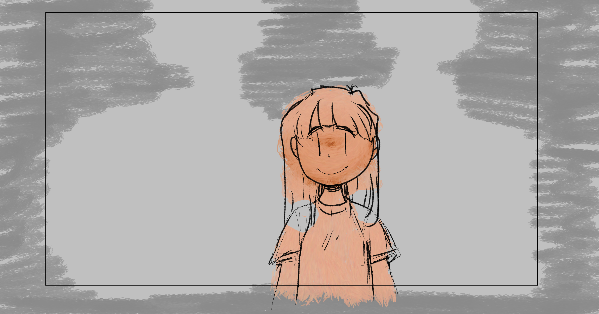
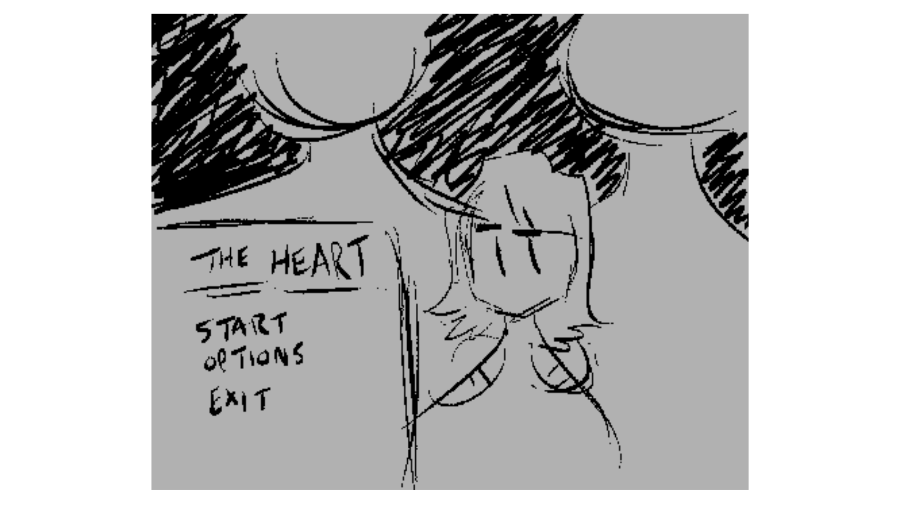
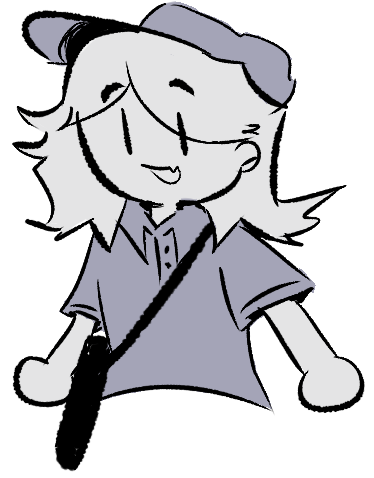
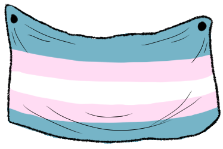

Overview
Can VR create emotions, empathy, and an understanding of queer stories where other mediums struggle?
Anemoia is a virtual reality (VR) game developed for the Meta Quest 2 using Unity that looks at how an interactive/immersive experience can convey the narrative of a queer student returning home from college for break. This game is created with the goal of examining the connections between gender, memory, family trauma, survival, and queer experiences.
Using environmental storytelling through the form of interactive levels, the player examines objects in their childhood bedroom, triggering flashback sequences that gradually reveal the protagonist’s experiences with queerness and family. These are told through the main character entering into these objects and interacting with “minigames.”
The narrative places a focus on the protagonist’s fear of the unknown, having to confront change, and navigating the uncertainty of the future. Anemoia is a word from the website The Dictionary of Obscure Sorrows and refers to the feeling of “nostalgia for a time you never experienced.” These are memories of a childhood filtered through the lens of gender they didn't yet have the language to describe, a past they can now see clearly and reflect on, allowing them to grieve for a past they did not get the chance to experience. A past where they felt connected rather than disconnected.
It was a life they lived but did not feel present in; it wasn't really them. Every item they reflect on carries with it an emotional weight. Every book, photograph, shirt, etc. These forgotten objects hold a version of the past where they did not get to be their authentic self.

Process
-
Phase 1
Research
The research done for this project focused on areas of immersion in VR, the impact of spatial audio design, walking simulators, virtual experiences, storytelling methods, examination of the relationship between the user and their avatar, and transgender representation in games.
-
Phase 2
Early designs
We began with rough sketches, mapping out the project. I created pieces of character and environmental concept art while we began building the basics up in the Unity engine.
-
Phase 3
Storyboarding
I wanted the project to open with an animation sequence. However, this was later dropped due to problems with the scope of it. Below are the individual storyboards to look through, as well as a gif featuring a more refined version of those storyboards.

Refined animatic of the opening sequence -
Phase 4
User playtesting
Playtesting occurred during class workshops, with classmates playing our VR demo. The feedback we gathered from this directly informed major design choices we later made (see Decision point II).
-
Phase 5
Final iteration and outcome
The final capstone build of Anemoia is a completed foundation for what will be continued. The base of what we strove to create is present. The game moves between scenes, starting in the bedroom scene; the objects are playable scenes the player goes into to explore and complete a task. The main things remaining absent are the sound design as well as the narrative scripting and voice acting. I believe these being added will help provide more of an emotional weight to the game, but where it is at the moment is a good stopping point for the foundation of it.
Major project decision points
Decision point IFrom The Heart to Anemoia
Original project design“The Heart is a virtual reality (VR) horror game developed for the Meta Quest using Unity that looks at how interactive/immersive horror can convey the narrative of a queer student returning home from college for break. The game will make use of environmental storytelling to examine the connections between memory, family trauma, and queer life experience. The player will examine objects in their childhood bedroom, in turn triggering flashback narrative sequences that gradually reveal the protagonist’s experiences with queerness and family. The horror elements emerge from the protagonist’s fear of the unknown, having to confront change, and navigating the uncertainty of the future.”
The pivot
The original idea for our project leaned heavily into the horror element, and there were some interesting ideas to explore with this. Queer horror as a genre is an interesting way to tell stories of a similar manner; the use of dread used to externalize experiences of alienation, bodily estrangement, and family trauma.
As we progressed, however, things changed. As we did our “Scope and Field” assignment in this capstone course, I found myself having to force horror concepts into the project's narrative, reaching through sources that did not match what the project was truly wanting to do. That was a signal for me that something needed to change. To me, this meant the game was not meant to be a horror game.
Dropping the horror genre opened up what we could do with the project considerably. It made space for us to focus on interactive minigame mechanics, and left some room for a more lighthearted tone at times. We also were able to have exploration without worrying about creating a tone of dread for the player. I believe it became more honest to what the project was meant to be.
Queer horror remains a concept I would like to explore in a future project, but for Anemoia, it was a good thing to rethink our original choice of genre.
Decision point IIFrom walking simulator to minigames
The earliest version for Anemoia was closer to a walking simulator, a VR experience where the player moves through their bedroom, examines objects, and relies on environmental storytelling to get a message across to the player.
User playtesting feedback worked to alter this angle. When classmates played the demo during a class workshop day, what received the most positive feedback was a scene where you swing around a sword. Physical interaction and interactivity, interacting with the space with your hands, were well-received elements of the game. The core appeal of VR for many people is this sort of experience, so it made sense. This left some prior walking simulator ideas off the table, however.
The pivot towards minigames worked to tell a story while still meeting the player with what they enjoyed from the demo. We have two scenes, currently.
The sword in the stone
The first scene is King Arthur-inspired: the player pulls a sword out of a stone, fights off a wave of enemies, defeats the boss, and ends with the player returning back to the bedroom scene (the starting point of the game).
This scene is meant to represent the main character's love of an old childhood book, the King Arthur story. This connects with a message of gender dysphoria, as the main character only ever got to feel masculine through projecting himself as a hero who pulled out the sword when no one else could. Going into this scene and taking the sword, fighting against knights and winning.
The photograph
The second scene is a photograph sequence, where the player explores through a room collecting fragmented pieces of a photograph, putting them back together in order to leave the scene.
This is meant to be a photograph taken during a childhood birthday party, a particularly rough memory for them, one that reveals more about their negative relationship with their family.
Reflection
“Working on Anemoia helped me to learn what sort of structure helps me to work better as both a designer and leader.”
The skills I have learned throughout my time in the DNID (Digital Narrative and Interactive Design) program along the way have aided my ability to be successful in the creation of this project.
During my time in the program, one of the most influential courses I took was a virtual reality class. Here, I developed a final project looking into immersion and the ways it could be implemented without the use of VR. I used an Xbox 360 Kinect and attempted to set up body tracking with Unity. While this was a much harder, more complicated project, I believe it helped me to have some level of familiarity with Unity for the purposes of Anemoia.
This semester specifically aided me in bettering my less technical skills, such as project management. Working on Anemoia helped me to learn what sort of structure helps me to work better as both a designer and leader: ways to pace work, communication, and making decisions for (and as) a group. I had not taken on a project management role previous to this project, so this helped me greatly in learning what I do well and what I could improve on in future project management roles.

Capstone values
We were guided by the class values of experimentation, openness for collaboration, communication, empathy, adaptability, and accessibility.
- Experimentation
- Openness for collaboration
- Communication
- Empathy
- Adaptability
- Accessibility
Of the capstone values, adaptability and experimentation feel the most relevant to our experience creating Anemoia as a group.
Adaptability: We had a developed concept early on and had to walk away from it due to needing to change the game's genre and really figure out what we were going for.
Experimentation: When things were planned out but did not work properly, experimentation helped to get those things done but through a different method than usual. Anemoia as a product exists due to problem-solving such as this.
Works cited
- Banks, Beck. “A Visible Absence: Transmasculine People on the Screen.” Participations: Journal of Audience & Reception Studies, 2021.
- Barreda-Ángeles, Miguel, et al. “Virtual Reality Storytelling as a Double-Edged Sword: Immersive Presentation of Nonfiction 360°-Video Is Associated with Impaired Cognitive Information Processing.” Communication Monographs, vol. 88, no. 2, 20 Aug. 2020, pp. 154–173, https://doi.org/10.1080/03637751.2020.1803496.
- “2024 GLAAD Gaming Report: The State of LGBTQ Inclusion in Video Games.” GLAAD, 26 Feb. 2025, glaad.org/glaad-gaming/2024.
- Graja, Sarra, et al. “Impact of Visual and Sound Orchestration on Physiological Arousal and Tension in a Horror Game.” IEEE Transactions on Games, vol. 13, no. 3, Sept. 2021, ieeexplore-ieee-org.pitt.idm.oclc.org/document/9130167.
- Kagen, Melissa. Wandering Games. The MIT Press, 2022, https://doi.org/10.7551/mitpress/13856.001.0001.
- Lavoie, Raymond, et al. “Virtual Experience, Real Consequences: The Potential Negative Emotional Consequences of Virtual Reality Gameplay.” Virtual Reality, vol. 25, no. 1, 2 Apr. 2020, pp. 69–81, https://doi.org/10.1007/s10055-020-00440-y.
- Paavolainen, Jasa. “Storytelling Methods in Non-Linear Video Games.” Tampere University of Applied Sciences, 2024.
- Szolin, Kim, et al. “‘I Am the Character, the Character Is Me’: A Thematic Analysis of the User-Avatar Relationship in Videogames.” Computers in Human Behavior, vol. 143, June 2023, p. 107694, https://doi.org/10.1016/j.chb.2023.107694.
- Thach, Hibby. “A Cross-Game Look at Transgender Representation in Video Games.” Press Start, 2021, https://press-start.gla.ac.uk/index.php/press-start/article/view/187.
- The Dictionary of Obscure Sorrows. “Anemoia.” The Dictionary of Obscure Sorrows, www.thedictionaryofobscuresorrows.com/concept/anemoia.
- Unity. VR and MR Development in Unity. Unity Manual, docs.unity3d.com/6000.3/Documentation/Manual/VROverview.html.
